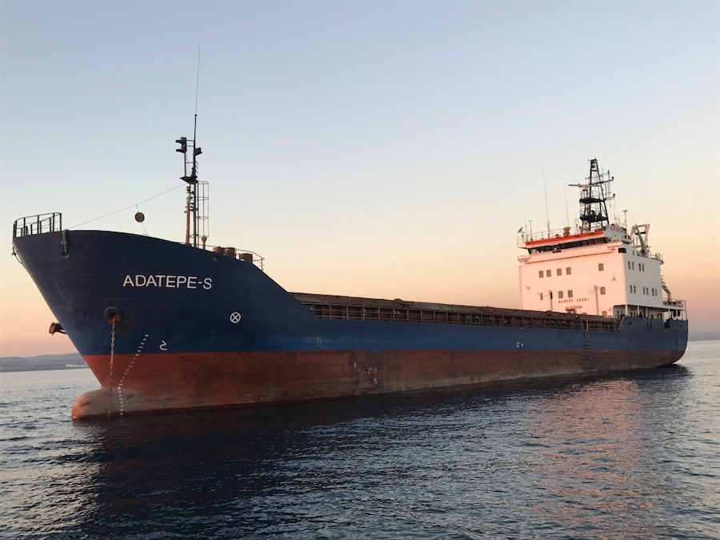
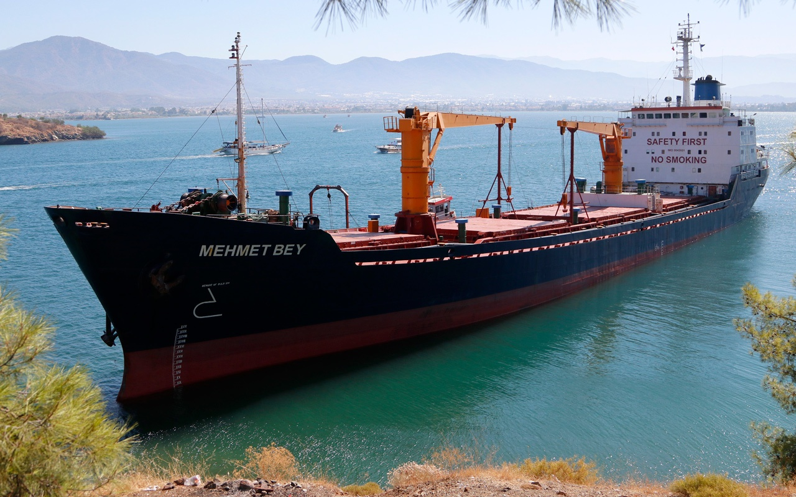

KURU YÜK GEMİLERİ


Kuru Yük Gemileri sıvı olmayan yükleri taşır. Muhtemel yükler arasında konteynerler,
genel yük, ahşap, taşıtlar, yine tahıl gibi kuru dökme yükler, kamyonlar, vb. bulunur.
SHİP LOGİSTİCH